Image Classification and Convolutional Neural Network#
Outline#
In this tutorial we will first introduce basic ML/DL models including multilayer perceptron and convolitional neural network. We will also walk through an introduction on PyTorch and introduce DataLoader as well as doing data transform with PyTorch. There will be a hands-on session on Natural Hazard Detection as an example of how CNN can be used to do image classification.
Traditional Methods#
Traditional image classification methods consist of two steps: 1. Feature extraction (encoding) 2. Establishing a connection between features and image labels (decoding)
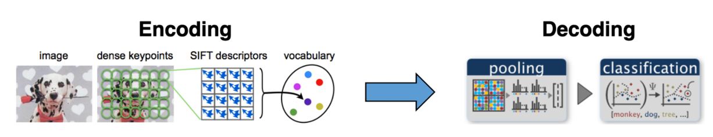{kind=link}
Image source: [Cen]
What is Deep Learning?#
As we mentioned, traditional approaches first identifies the features to solve a problem, then develops methods to extract these features. In contrast, deep learning methods identifies the features it needs to solve a problem using the presented data.
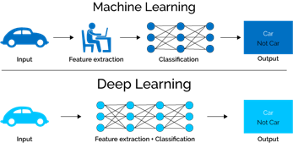{kind=link}
Image source: [Mah]
Multi-Layer Perceptron (MLP)#
What is Perceptron#
Before we learn about multi-layer perceptron (MLP), we need to dive into the conception of perceptron, since MLP originates from the concept of perceptron. The assumption behind perception is that our dataset is linearly separable (i.e. there exits a hyperplane that can perfectly divide the dataset into two small groups). Suppose our dataset has two classes with label +1 and -1, then perceptron can find such hyperplane that seperates the two clasese in a finite number of steps. If the assumption is not held, perceptron will fail. The perceptron classifier defines the hyperplane that seperates the two classes as
$$H = {x : dot(x, w) + b = 0}$$
Positive examples are defined as the examples with
$$dot(x, w) + b > 0$$
and negative examples are defined as examples with
$$dot(x, w) + b < 0$$
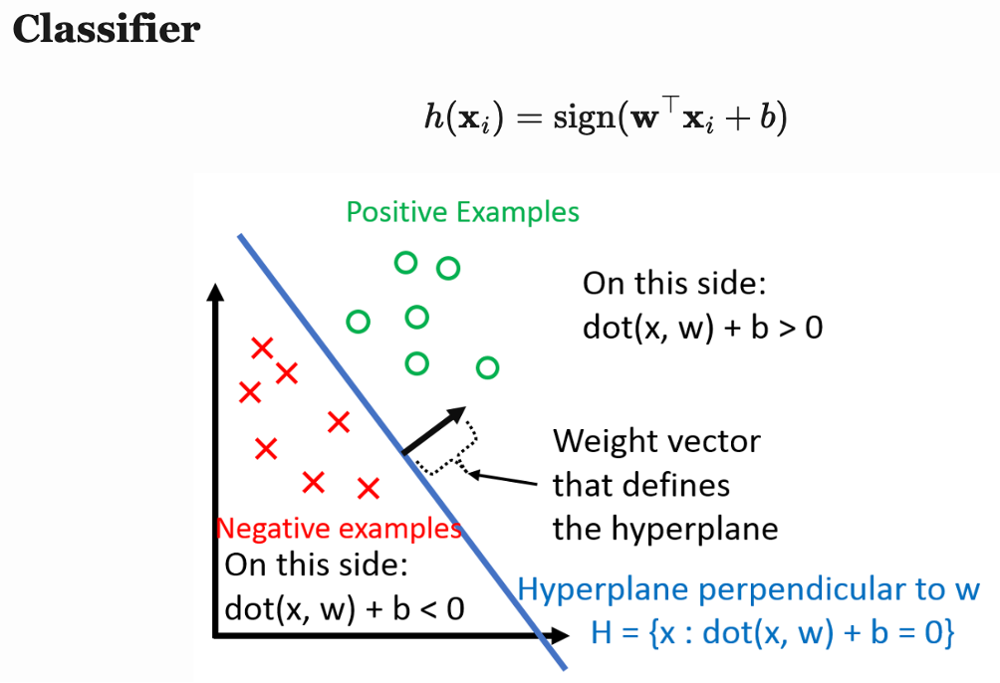{kind=link}
Image source: [Wei]
Multi-Layer Perceptron (MLP)#
When MLP is applied to a linear regression problem, it can be considered as building a piecewise linear function to simulate the target curve.
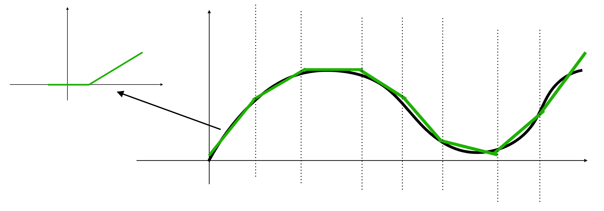{kind=link}
Layers in MLP are called linear layer or fully connected layer. Neurons in each layer are fully connected to the neurons in its following layer. The figure below shows an example of MLP for binary classification.
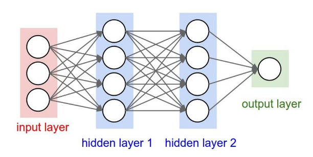{kind=link}
Image source: [Li]
Here is the formular for the MLP shown in the figure:
$w^{(i)}$: weight matrx of layer $i$
$o^{(i)}$: output of layer $i$
$x$: input vector
$y$: output scaler
$\sigma$: activation function (e.g. sigmoid, ReLu)
$o^{(1)} = \sigma((w^{(1)})^Tx)$
$o^{(2)} = \sigma((w^{(2)})^To^{(1)})$
$y = (w^{(3)})^To^{(2)}$
For binary classification (i.e. dataset has only two possible labels), we can define one class having label 1 and the other class with label -1, and then use the sign of $𝑦∈\mathbb{R}$ as the classification result. For multiclass classification, we use one output per class that uses the softmax activation function.
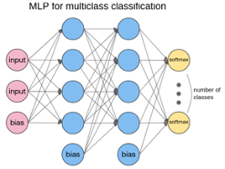{kind=link}
Image source: [Ope]
Training and Testing#
Training is the process for making a model. Training data is the data “observed” by the learning model. Testing is the process for evaluating the performance of the model. Testing Data is data NOT observed by the learning model. When we do prediction, we apply model to data not in either training or testing data set. We assume the input data and its prediction are from the same process producing the training data.
A basic idea in training machine learning model is to minimize loss function. Numerical optimization methods like gradient descent are commonly used to find optimal values for $w$. At every iteration, gradient descent tweaks the parameters to minimize the loss function. Below is the math equation for gradient descent:
$$f(w_t;x)={\frac{1}{n}}\sum_{i=1}^nL(h(x_i), y_i)$$
$$w_{t+1} = w_t - \alpha\nabla f(w_t;x)$$
Backpropagation is used to calculate the gradient of weight. Fortunately, manual derivation for gradients of different neural networks is not needed. All ML/DL frameworks (e.g. PyTorch and Tensorflow) have auto-derivation engine, which is usually implemented based on computation graph and backprop.
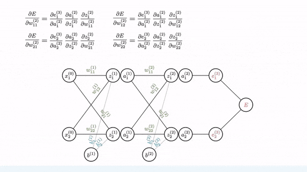{kind=link}
Image source: [Gom]
Softmax Regression#
Softmax operation convers MLP’s output to possibility. A commonly used loss for output via softmax regression is cross entropy loss. Cross entropy loss measures the variation between the probability distribution for true class distribution and predicted class distribution. Formulars below is the definition of softmax regression and the corresponding cross entropy loss:
Softmax regression: $p_i = (softmax(x))i = \frac{exp(x_i)}{\sum{j=1}^cexp(x_j)}$
Cross entropy loss: $L(x, y) = -\sum_{i=1}^ct_ilog(p_i)$
Where we define $t_i$ and $p_i$ as:
$t_i$: true class distribution.
$p_i$: predicted class distribution.
In softmax regression, each neuron in the output layer generates the possibility for the corresponding class. The one with the highest possibility is the prediction label generated by the model.
Underfitting vs. Overfitting#
Underfitting happens when model cannot reflect all the relations from training data. Model performs poorly on training and testing data. In other workds, the model “failed to learn”. We can add more complexity to the model to solve the problem of underfitting. Possible solutions include adding more features, using more complex model, boosting etc. Overfitting happens when model has more parameters that can be justified by the data. It leads to poor generalization on new testing data. A sign for overfitting is that the model performs very well on training data but poorly on testing data. Possible solutions include using less complex model, more data, bagging etc.
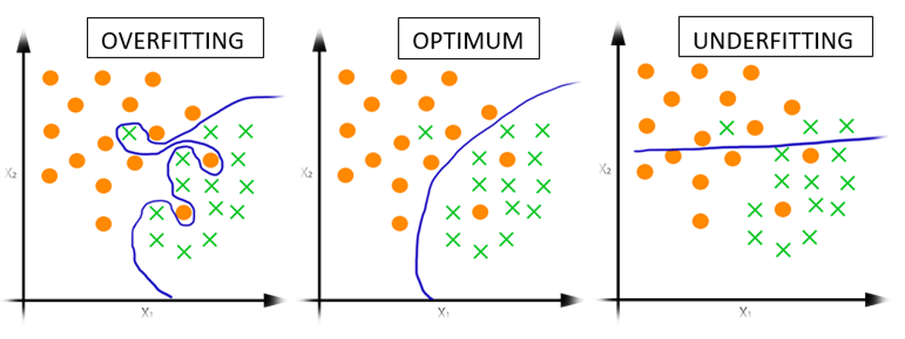{kind=link}
Image source: [Jog]
Convolutional Neural Network (CNN)#
From MLP to CNN#
MLP can be trained to classify simple image dataset, such as MNIST dataset which contains handwritten digits and each image has 28 pixels in width, 28 pixels in height, and 1 greyscale channel. However, as for more complex image recognition tasks, its performance is not so good. The main reason is that the fully connected layers fail to learn the spatial information. Objects of a particular class usually has specific pixel patterns gathered. When the object moves to another place in the image, model should still be able to recognize it, even it might not have seen such training image before.
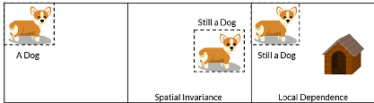{kind=link}
Image source: [Vid]
Convolutional Layer#
The convolutional layer is the core building block of a CNN. It consumes two inputs: input feature maps and a set of filters, and generates output feature maps. The filter is applied to an area of the input feature map by doing a dot product. This dot product is then fed into the output feature map. Convolution layers ensures spatial invariance property. No matter where the object is, the model can detect it correctly
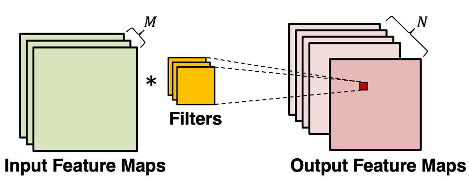{kind=link}
Image source: [Ber]

Image source: [Bri]
Pooling Layer#
Convolution exploits the spatial information of pixels, but we still have the problems when object is moved, rotated, or shifted in the image. One common approach to cope this issue is to down sample the information from convolution results. Thus, only the large or important structural elements are preserved and then passed to the following layers. In CNN, we can down sample by using pooling layer. Common pooling operations include max, min, avg.
Dropout layer#
Dropout layer reduces the problem of overfitting. Given a probability of dropout, it randomly drops some neurons from the fully-connected layer. Adding such randomness into the network can increase its generalization to different situations, as it has been proven to be an effective regularization algorithm. One thing to mention is that dropout only happens during the training stage. When we train the model, if a neuron is selected by the dropout layer, it will not contribute to the following layers, its gradient will not be computed, and its parameter will not be updated.
Residual connection#
Deep CNN models usually have worse performance. This is not caused by overfitting, and adding more layers can lead to higher training error. One explanation is that during training process, gradient vanishing happens in some layers, causing all its preceding layers fail to learn. Residual connection can help reduce model complexity. DenseNet, in which all the layers are connected through the residual signal, can achieve the same prediction accuracy with a smaller CNN model.
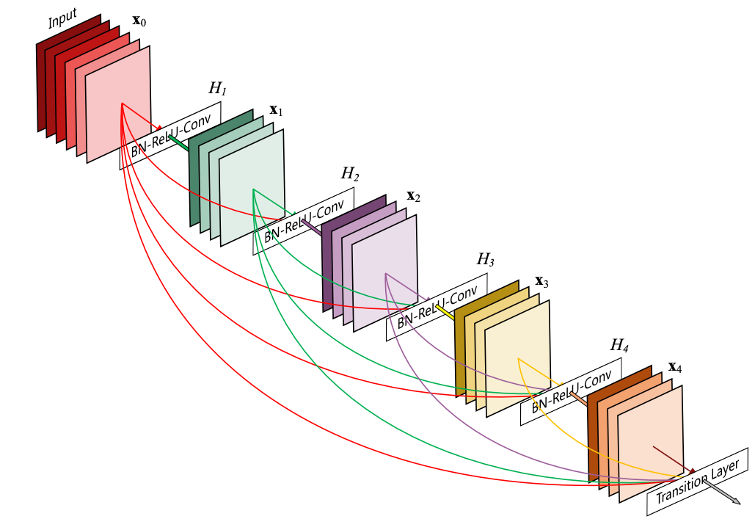{kind=link}
Image source: [HLVDMW17]
Data augmentation#
What if our CNN model overfits the training dataset, and we are not able to collect more data? A simple solution is to just “make up” more data. This is the idea behind data augmentation. Every time we sample an image from the dataset, we randomly perform some operations on them. For instance, shift, rotate, horizontal and vertical flip, clip, etc. PyTorch has implemented such operations for us.
Transfer Learning#
Usually, the larger the model is, the better performance it can offer, if it does not overfit. To train large model while not causing overfitting, we need large dataset. However, for specific tasks, like natural hazard detection, there might not be enough images, so training large model with such small dataset will cause overfitting. A work around is to use transfer learning. We can use large model and train it again on our small dataset. To adapt large model to our small dataset with fewer number of classes, modifications on the “classification” block is usually needed.
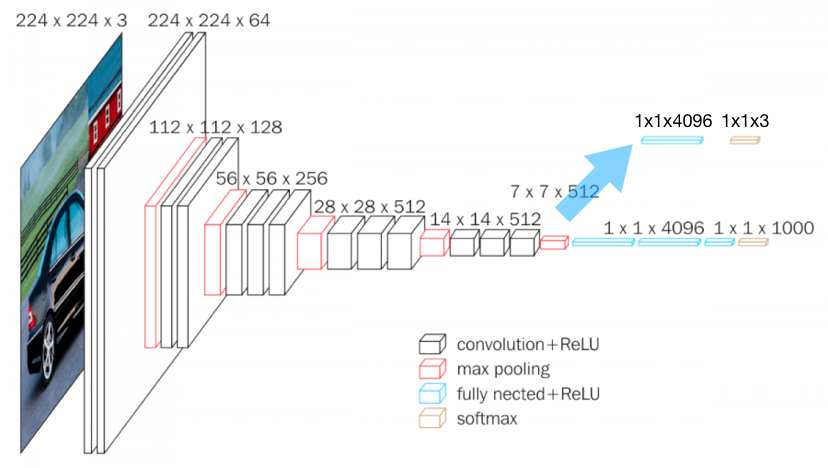{kind=link}
Image source: [Has]
Reference#
Bernard. URL: https://classes.cornell.edu/browse/roster/FA22/class/ECE/5775.
Britz. URL: https://dennybritz.com/posts/wildml/understanding-convolutional-neural-networks-for-nlp/.
Centiner. URL: NHERI-SimCenter/SimCenter_DesignSafe_ML_2022.
Gomede. URL: https://medium.com/aimonks/understanding-backpropagation-the-engine-behind-neural-network-learning-a7c2e1acdbf.
Hassan. URL: https://neurohive.io/en/popular-networks/vgg16/.
Gao Huang, Zhuang Liu, Laurens Van Der Maaten, and Kilian Q Weinberger. Densely connected convolutional networks. In Proceedings of the IEEE conference on computer vision and pattern recognition, 4700–4708. 2017.
Mahapatra. URL: https://towardsdatascience.com/why-deep-learning-is-needed-over-traditional-machine-learning-1b6a99177063.
Opennn. URL: http://www.opennn.net/.
Vidhya. URL: https://medium.com/analytics-vidhya/cnn-convolutional-neural-network-8d0a292b4498.
Weinberger. URL: https://www.cs.cornell.edu/courses/cs4780/2023fa/lectures/lecturenote03.html.